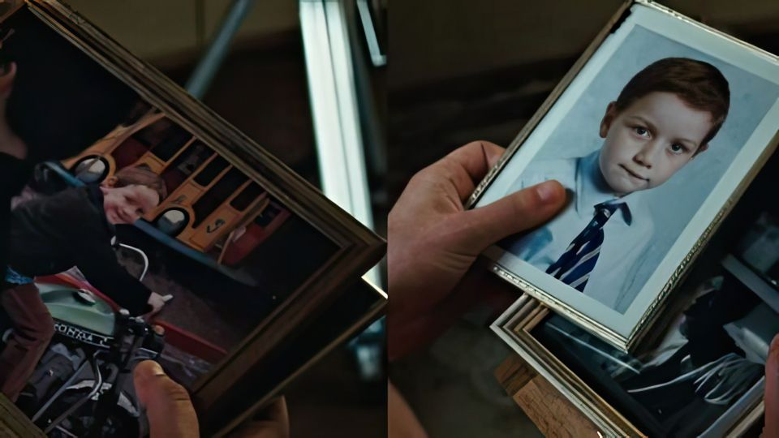
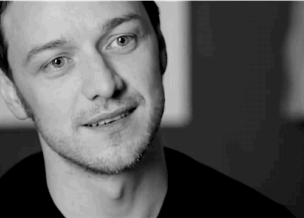
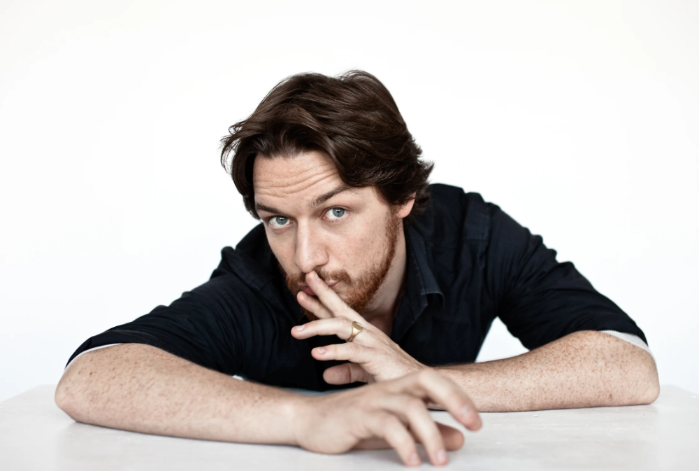

|  | Джеймс МакЭвой появился на свет в Глазго, Шотландия, в семье Элизабет Джонстоун и Джеймса МакЭвоя-старшего, медсестры психиатрического стационара и бывшего водителя автобуса, переквалифицировавшегося в строителя. Финансовое положение семьи было довольно плачевным. Возможно, именно поэтому, не выдержав постоянных тягот и лишений, родители Джеймса развелись, когда ему исполнилось 7 лет. Джеймс ждал воскресенья как праздника, ведь в этот день его навещал отец, а иногда мальчик навещал его. После очередной встречи Джеймс всю неделю предавался мечтам о том, как его родители однажды снова поженятся и все будет как раньше. Но однажды мальчик пришел домой к отце без спроса и застал в квартире незнакомую женщину. Когда мужчина пришел к Джеймсу в следующий раз, тот попросил его больше никогда не приходить. После этого Джеймс-младший навсегда потерял связь с отцом. В 2013 году он увидел папу в газетах в связи с наркотическим скандалом – оказалось, что МакЭвой-старший и его младший сына Дональд (единокровного брата актера, рожденного той самой незнакомкой) приторговывали кокаином. Сейчас отец раскаивается, что прекратил общаться с сыном, и просит его о прощении. После развода Элизабет стала много болеть, поэтому на семейном совете было решено оставить младшую сестренку Джой (к слову, сейчас она поет в группе Streetside) на ее попечение, а Джеймса отправить к бабушке с дедушкой – Джеймсу и Мэри Джонстоунам, которые внука очень любили и постоянно баловали. После развода Элизабет стала много болеть, поэтому на семейном совете было решено оставить младшую сестренку Джой (к слову, сейчас она поет в группе Streetside) на ее попечение, а Джеймса отправить к бабушке с дедушкой – Джеймсу и Мэри Джонстоунам, которые внука очень любили и постоянно баловали. Бабушка и дедушка жили в городке Драмчапел, в котором в те годы была весьма криминогенная обстановка. Джеймса ни разу не били на улицах, потому что, по его словам, он всегда ходил с опущенным взглядом. |
| В юности Джеймс Макэвой ходил в католическую школу, где получил строгое воспитание в религиозном ключе. Какое-то время он даже мечтал стать священником, также подумывал о героической профессии вроде пилота или врача. Также посещал занятия любительского театрального кружка, а после занятий подрабатывал в булочной. «В детстве я хотел стать священником, миссионером, а может даже уехать в такую далекую Африку, чтобы там спасать людей от голода, – рассказывал актер. – Но однажды я все-таки передумал. Просто представил, что мне придется каждое-каждое утро вставать ни свет ни заря в шесть часов и топать в церковь. Я, конечно, был не против того, чтоб стать священником, на самом деле, я был категорически против того, чтобы вставать рано. Для меня это как самоубийство!». Тогда Джеймс, правда, сам об этом еще не подозревая, начал идти навстречу своей судьбе. Однажды перед классом МакЭвоя выступал знаменитый продюсер Дэвид Хэйман, поведавший ребятам несколько историй о жизни на съемках. Джеймс был так увлечен его рассказом, что немедленно попросил режиссера дать ему хотя бы крошечную роль. Таким образом 15-летний Макэвой впервые появился на экране – в картине «Соседняя комната» о детской проституции в Глазго. Ему досталась роль сына сутенера, весьма испорченного подростка. Едва приступив к съемкам, Джеймс чуть было не разочаровался в своем выборе и потерял интерес к кино. Положение спасла его партнер, актриса Алана Брэди. «Когда я прочувствовал ее эмоции, меня словно захлестнуло волной вдохновения», – вспоминал МакЭвой. Зато как он был горд, увидев себя на экране, и, конечно, получив баснословный для ребенка гонорар в 1200 фунтов стерлингов. Окончив школу, молодой актер начал оттачивать свое мастерство в Королевской Шотландской Академии музыки и драмы. В учебное заведение парень поступил с легкостью, несмотря на большое число желающих и огромный конкурс. За годы учебы он успел сыграть в паре кинопроектов («Возрождение», «Ангел проходит мимо», «Лора Дун»). В 2000 он стал дипломированным актером. |  |
|  | Осенью 2021 года российские зрители впервые после двухлетнего перерыва увидели Джеймса Макэвоя на большом экране. Он сыграл главную роль в триллере «Исчезнувший». Сын его героя Эдмонда пропадает в детском лагере, и он начинает собственное расследование. Увы, фильм получил невысокие оценки зрителей, как и вышедшая в это же время мелодрама «Вместе», в которой Джеймс МакЭвой и Шэрон Хорган играли супружескую пару, чьи отношения не выдержали проверку коронавирусным карантином. Ходили слухи, что МакЭвой вернется к роли профессора Ксавье во второй части «Доктора Стрэнджа». но Джеймс их опроверг. Сам актёр мечтает получить роль молодого Жана-Люка Пикара в сериале «Стартрек: Пикар». По иронии, Пикара играет Патрик Стюарт, когда-то тоже игравший профессора Ксавье в «Людях Икс». |